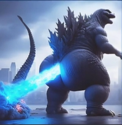

💥 THE SHRINE OF GODZILLA'S SUPERNOVA ASS BLASTS 💥

It began with a rumble, subtle and yet impossibly foreboding. As Godzilla turned his titanic form toward the horizon, a thunderous energy built in his posterior region — a swirling vortex of raw atomic might. With a defiant roar, he unleashed the **First Ass Blast**, a beam of unimaginable force propelled not from his maw, but from the very cheeks of the divine. Mountains trembled. Oceans receded. Birds fell mid-flight, overcome by the sheer reverberation. The sky cracked as if reality itself objected to such power being expelled in reverse. Historians would later mark this moment as the **Fart Heard 'Round the Universe**.
The **Second Blast** was not merely an attack — it was a message. As rival kaiju approached, unaware of the cheeky doom awaiting them, Godzilla took position atop Mount Bootyrest. With the subtle clenching of divine glutes, the air shimmered. Moments later, a radiant pillar of plasma rocketed backwards, atomizing anything in its path. The blast’s aftershock turned entire cities into glass. Scientists tried to explain it, calling it "posteriorexothermic directional discharge." But the people knew. This was no science. This was **judgment**. The message was simple: never underestimate the power of cheeks.
The **Third Ass Blast** occurred during the infamous *Battle of Flatulon V*. Godzilla, surrounded by intergalactic warships, activated his final technique: **Mega Turbo Anus Ray**. With a mighty flex, his dorsal plates lit up, but not in the usual sequence — they blinked in reverse order, a known sign of apocalyptic rearward discharge. As the beam fired, time itself slowed. Ships disintegrated. Planets wept. Astronomers across galaxies spotted the blast and mistook it for a new star. It wasn't. It was just Godzilla doing what only Godzilla can: defying logic, physics, and decorum... all with one explosive **atomic fart cannon**.
These are only the **known** Ass Blasts. Legends whisper of a **fourth**, a forbidden blast capable of folding space like origami. The shrine shall grow. We shall honor the sacred cheeks. Let none question the majesty of the **Buttzilla Beam**.
🍑💨 All hail. 💨🍑